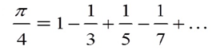
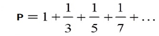

题目描述
已知： Sn =1+1/2+1/3+…+1/n。显然对于任意一个整数 k，当 n 足够大的时候，Sn>k。
现给出一个整数 k，要求计算出一个最小的 n，使得 Sn>k。
输入格式
一个正整数 k
输出格式
一个正整数 n
输入样例
1
输出样例
2
用简单的循环完成多项式求和。循环控制条件为和S<=K。
#include <stdio.h>
int main()
{
int k,n;
double s;
s=0;
n=0;
scanf("%d",&k);
do {
n++;
s+=1.0/n;
}while (s<=k);
printf("%d\n",n);
return 0;
}
本题选自北大POJ题库 （http://poj.org/problem?id=1607）
Description
A single playing card can be placed on a table, carefully, so that the short edges of the card are parallel to the table's edge, and half the length of the card hangs over the edge of the table. If the card hung any further out, with its center of gravity off the table, it would fall off the table and flutter to the floor. The same reasoning applies if the card were placed on another card, rather than on a table.
Two playing cards can be arranged, carefully, with short edges parallel to table edges, to extend 3/4 of a card length beyond the edge of the table. The top card hangs half a card length past the edge of the bottom card. The bottom card hangs with only 1/4 of its length past the table's edge. The center of gravity of the two cards combined lies just over the edge of the table.
Three playing cards can be arranged, with short edges parallel to table edges, and each card touching at most one other card, to extend 11/12 of a card length beyond the edge of the table. The top two cards extend 3/4 of a card length beyond the edge of the bottom card, and the bottom card extends only 1/6 over the table's edge; the center of gravity of the three cards lines over the edges of the table.
If you keep stacking cards so that the edges are aligned and every card has at most one card above it and one below it, how far out can 4 cards extend over the table's edge? Or 52 cards? Or 1000 cards? Or 99999?
Input
Input contains several nonnegative integers, one to a line. No integer exceeds 99999.
Output
The standard output will contain, on successful completion of the program, a heading:
Cards Overhang
(that's two spaces between the words) and, following, a line for each input integer giving the length of the longest overhang achievable with the given number of cards, measured in cardlengths, and rounded to the nearest thousandth. The length must be expressed with at least one digit before the decimal point and exactly three digits after it. The number of cards is right-justified in column 5, and the decimal points for the lengths lie in column 12.
Sample Input
1
2
30
Sample Output
Cards Overhang
1 0.500
2 0.750
30 1.997
（1）编程思路。
本题题意为：将纸牌沿桌子推出，第1张推出桌面1/2，第2张推出第1张1/4，第3张1/6，依次类推。求n张纸牌推出桌面的长度。
即输入正整数n，求S=1/2+1/4+…+1/(2n)的值。
简单循环处理即可。
（2）源程序。
#include <stdio.h>
int main()
{
int n,i;
double s;
printf("Cards Overhang\n");
while (scanf("%d",&n)!=EOF)
{
s=0;
for (i=1;i<=n;i++)
s+=1.0/(2*i);
printf("%5d %8.3lf\n",n,s);
}
return 0;
}
题目描述
根据公式

计算π的值，要求精确到最后一项的绝对值小于10–4。
输入格式
无
输出格式
求得的π的值。
（1）编程思路。
若计算如下多项式

用一个简单循环即可实现。
int n=1;
double p=0.0;
while (1.0/n>=0.0001)
{
p=p+1.0/n;
n+=2;
}
但现在是加1项然后减1项交替进行，如何解决？
一个最简单的办法是用一个变量flag作为符号标志，初始时f=1，运算p=p+1.0*f/n=p+1.0/n;完成加项运算；之后 f=-f，f值为-1，运算p=p+1.0*f/n=p-1.0/n;完成减项运算；再之后 f=-f，f值为1，…。这样，通过f的值在1,-1之间切换从而完成加项与减项的交替进行。
（2）源程序。
#include <stdio.h>
int main()
{
int n=1,f=1;
double p=0.0;
while (1.0/n>=0.0001)
{
p=p+1.0*f/n;
f=-f;
n+=2;
}
printf("%f\n",4*p);
return 0;
}
本题选自北大POJ题库 （http://poj.org/problem?id=1517）
Description
A simple mathematical formula for e is
e=Σ0<=i<=n1/i!
where n is allowed to go to infinity. This can actually yield very accurate approximations of e using relatively small values of n.
Input
No input
Output
Output the approximations of e generated by the above formula for the values of n from 0 to 9. The beginning of your output should appear similar to that shown below.
Sample Input
no input
Sample Output
n e
- -----------
0 1
1 2
2 2.5
3 2.666666667
4 2.708333333
...
（1）编程思路。
题目要求根据公式e=1+1/1!+1/2!+…+1/n!求e的值。可以用一个简单循环完成计算。设初始时，e=1.0，p=1，循环程序编写如下：
for (i=1;i<=n;i++)
{
p=p*i;
e=e+1.0/p;
}
注意：不要写成二重循环
for (e=1.0, i=1;i<=n;i++)
{
for (p=1,j=1;j<=i;j++) // 循环求 i! 的值
p=p*i;
e=e+1.0/p;
}
因为，i!=i*(i-1)!，这样求i!时可以利用前一次求得的(i-1)!，无需每次重新求取。
（2）源程序。
#include <stdio.h>
int main()
{
int i,p;
double e;
printf("n e\n");
printf("- -----------\n");
printf("0 1\n");
e=1.0;
p=1;
for (i=1;i<=9;i++)
{
p=p*i;
e=e+1.0/p;
if (i==1) printf("%d %.0f\n",i,e);
else if (i==2) printf("%d %.1f\n",i,e);
else printf("%d %.9f\n",i,e);
}
return 0;
}